SparkEnv: services local to one Spark JVM
component index
SparkEnv answers "which RPC, storage, serialization, shuffle, and memory services
should code in this JVM use?" A classic PySpark YARN application with three executor
JVMs has four environments once initialized: one in the driver JVM
and one built independently in each executor. SparkEnv.get accesses the
local one. Neither the Python driver nor Python workers get their own SparkEnv.
It is not an OS environment-variable map, a SQL session, or the
SparkContext that starts the application.
Flow at a glance
- Driver SparkEnv: Registers the endpoint for shuffle map locations.
- Executor tracker: Gets shuffle locations from the driver on a cache miss.
- Shuffle reader: Reads the needed blocks from those locations.
Watch for: If the executor cannot reach the tracker, check the advertised driver host and RPC port, not the Py4J port.
Show the animated flow

Who creates it, and with what?
| Caller |
Factory input |
Result and placement |
Driver SparkContext.createSparkEnv |
SparkConf, isLocal, LiveListenerBus, usable driver cores; bind address, advertised host and requested port from configuration |
createDriverEnv returns a SparkEnv with executor ID driver; the context installs it with SparkEnv.set. In cluster mode it lives in the AM JVM, in client mode on the submit host. |
CoarseGrainedExecutorBackend |
Driver-derived SparkConf, executor ID, bind address, advertised hostname, assigned cores, optional I/O encryption key, isLocal=false |
createExecutorEnv returns and publishes that executor's environment. A temporary driverPropsFetcher RPC client retrieves application configuration and shuts down before the environment is built. |
Compare the two factory signatures. The client-mode AM has an RPC
environment for talking to the driver, not a second driver SparkEnv.
Assembly, use, and shutdown
- Establish identity and transport. The common factory branches on
executor ID. The driver requires a listener bus. Both sides construct a
SecurityManager
and an RpcEnv; the driver writes the actual bound port back to
spark.driver.port. The factory creates the configured data serializer,
SerializerManager, and a separate JavaSerializer for closures. These are JVM
serializers, not the Python pickler.
- Register here or look up there.
registerOrLookupEndpoint(name, creator)
returns an RpcEndpointRef. On the driver it evaluates creator and registers the
endpoint. On an executor it resolves that name at the advertised driver address.
Thus MapOutputTrackerMaster owns shuffle metadata, while a MapOutputTrackerWorker
can request it. Block-manager master endpoints use the same pattern; each
process still has its own BlockManager and block transfer service.
OutputCommitCoordinator also gets a reference to a driver endpoint.
- Finish initialization at the right time. Constructing a
BlockManager does not
register it yet. The driver initializes shuffle and memory managers
before scheduling, then registers the block manager once it has an
application ID. On an executor the factory initializes its memory manager; executor
startup initializes the block manager and later loads shuffle managers
with the executor user classpath.
- Tear down once. Driver context stop and non-local executor
stop each close their own environment. A synchronized flag
prevents duplicate teardown; worker factories and trackers, shuffle/broadcast/block
services, metrics, and the commit coordinator stop before RPC shutdown and termination.
A clean driver context stop also clears the JVM's
SparkEnv reference.
Flowchart · Open full sizeText equivalent
flowchart LR
subgraph E["Executor JVM"]
W["MapOutputTrackerWorker"]
B["Local BlockManager"]
end
subgraph D["Driver JVM"]
M["MapOutputTrackerMaster endpoint"]
H["BlockManagerMaster endpoints"]
end
W -->|"RPC: ask for map-output metadata"| M
B -->|"RPC via master reference: register block manager"| H
B <-->|"Block bytes, separate from driver metadata RPC"| P["Peer block store / shuffle service"]Diagnostic: loopback works, cluster RPC does not
Suppose a client-mode driver advertises spark.driver.host=localhost. Its Python process
can use the local Py4J gateway and the JVM may successfully bind a port.
But localhost in an AM on another node denotes that node, not the submit host.
The AM will look for the driver there; executor bootstrap, if reached, also needs the
real driver address. Compare spark.driver.bindAddress (local interface) with
spark.driver.host (advertised peer address) and the bound RPC port.
Supply an address reachable from the YARN nodes, not the Py4J port or the UI port.